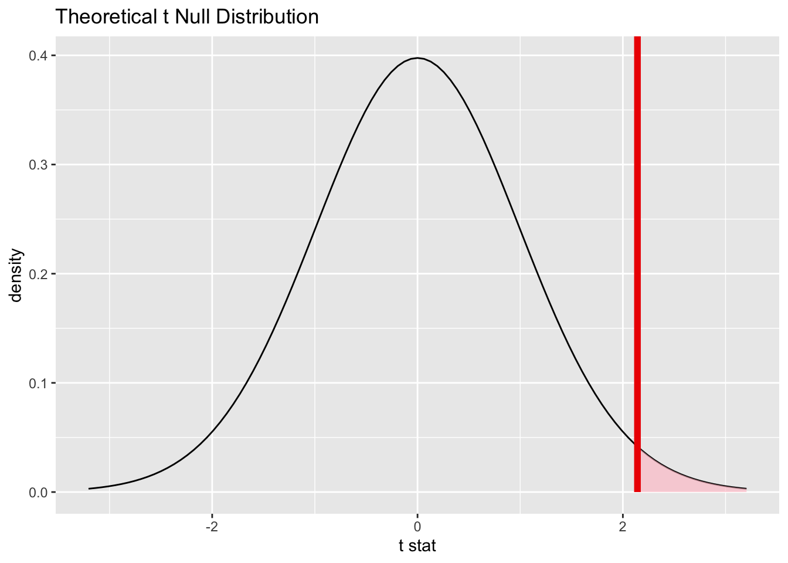

Warning: The statistic is based on a difference or ratio; by default, for
difference-based statistics, the explanatory variable is subtracted in the
order "no" - "yes", or divided in the order "no" / "yes" for ratio-based
statistics. To specify this order yourself, supply `order = c("no", "yes")` to
the calculate() function.
observed_diff
Response: poverty (numeric)
Explanatory: metro (factor)
# A tibble: 1 × 1
stat
<dbl>
1 3.19
So can the observed mean difference, 3.1854167, be attributed to chance alone, or is there a relationship between these two variables that could account for the difference in mean poverty percentages?
Check the assumptions of difference of means test
Simple random samples: counties are randomly selected from all 2560 US counties.
\(\frac{n}{N} = \frac{100}{2560} = 0.0391<<0.1\)
\(n = 100>40\)
Application of hypothesis testing
Null Hypothesis vs Alternative Hypothesis, Significance level
\(H_0:\) The difference of true means of poverty percentages between counties that have no metropolitan city in them and the counties that have the metropolitan city in them is 0 (i.e., poverty level of a county is independent of whether there is a metropolitan city in it or not).
\(H_a:\) The difference of true means of poverty percentages between counties that have no metropolitan city in them and the counties that have the metropolitan city in them positive (i.e., poverty level of a county DOES depend on whether there is a metropolitan city in it or not).
\(\alpha = 0.01\)
Sampling Distribution under the null hypothesis with checked assumptions. Under the null hypothesis of no difference,
\(\frac{\bar{x}-\bar{y}}{s_{\bar{x}-\bar{y}}}\) has approximately t-distribution with the APPROXIMATE degrees of freedom of \(df \approx n+m-2\).
Warning: The statistic is based on a difference or ratio; by default, for
difference-based statistics, the explanatory variable is subtracted in the
order "no" - "yes", or divided in the order "no" / "yes" for ratio-based
statistics. To specify this order yourself, supply `order = c("no", "yes")` to
the calculate() function.
t_stat
Response: poverty (numeric)
Explanatory: metro (factor)
Null Hypothesis: independence
# A tibble: 1 × 1
stat
<dbl>
1 2.14
p_value <- t_dist %>%get_p_value(obs_stat = t_stat, direction ='right')p_value
# A tibble: 1 × 1
p_value
<dbl>
1 0.0177
Visualization
t_dist %>%visualize() +shade_p_value(t_stat, direction ="right")

Decision
With the p-value of 0.017741 that is not small enough (less than our pre-determined significance level of 0.01),
we FAIL to reject the Null hypothesis that the difference between true averages poverty percentages between counties that have no metropolitan city in them and the counties that have the metropolitan city in them is 0 (i.e., we FAIL to reject that poverty level of a county is independent of whether there is a metropolitan city in it or not).
observed statistic of the difference of 3.15% can be attributed to chance alone, and there is no strong evidence against it.